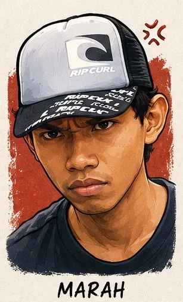
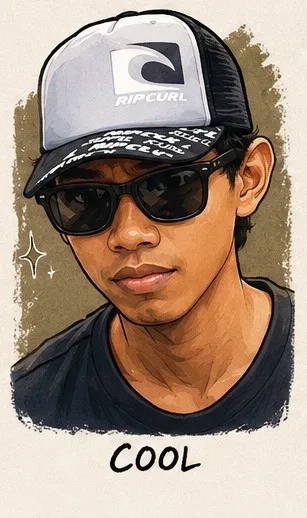
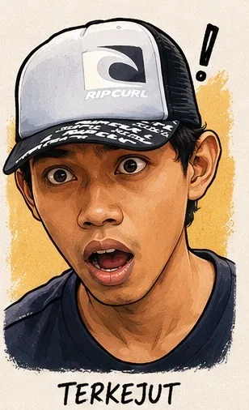
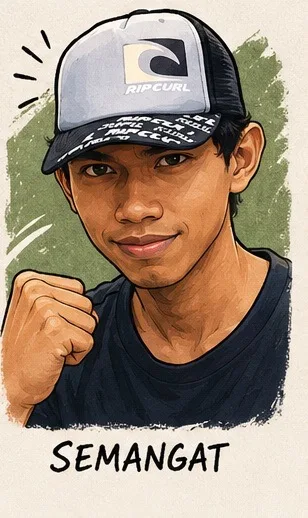

Kalau seseorang membuka folder Downloads di MacBook Pro Mid 2015 gue hari ini, yang pertama kali akan dia lihat bukan file rapi dengan nama yang jelas. Yang dia lihat adalah sebuah pemandangan yang — bagi orang luar — mungkin terlihat seperti kekacauan: deretan file bernama index(1).html, index(2).html, index(3).html... sampai index(51).html.
Lima puluh satu file. Satu tujuan. Satu website.
Begitulah cara kerja pembangunan ekosistem digital yang jujur — bukan yang dipoles untuk Instagram, bukan yang diperlihatkan di YouTube dengan thumbnail "Website Jadi dalam 10 Menit!" Ini adalah versi aslinya: iterasi tanpa henti, trial and error yang nyata, dan keputusan kecil yang harus diambil setiap kali tombol unduh ditekan.
Setiap dot di atas itu adalah sebuah keputusan. CSS yang tidak responsif di tablet — unduh lagi, perbaiki, upload ulang. Filter tag yang berantakan saat ada log baru ditambahkan — unduh lagi, debug, upload ulang. Warna border yang terlalu terang di mode gelap — unduh lagi. Tulisan yang terpotong di mobile — unduh lagi.
Yang tidak kelihatan dari luar adalah betapa sulitnya menjaga konsistensi di antara semua iterasi itu. Setiap kali satu bagian diperbaiki, ada kemungkinan bagian lain rusak. Itulah kenapa filter topik — Urban Farming, YouTube, Mekanik — harus dicek ulang setiap kali ada log baru masuk. Satu tag yang salah, dan entri pisang bisa tiba-tiba muncul di tab YouTube. Persis yang baru terjadi. Persis yang sudah diperbaiki.

"51 kali unduh ulang, 51 kali upload, 51 kali lihat hasilnya belum bener juga... ada momen di mana lo harus marah dulu ke diri sendiri supaya fokusnya balik."
Ada asumsi yang sering muncul ketika seseorang tahu bahwa website ini dibangun dengan bantuan AI: "Wah, pasti gampang dong, tinggal minta langsung jadi." Asumsi itu salah total — dan 51 file revisi itu adalah bukti tertulisnya.
Claude, Gemini, ChatGPT — ketiganya dipakai, masing-masing untuk peran yang berbeda. Claude untuk diskusi mendalam, struktur konten, dan problem solving yang butuh konteks panjang. Gemini untuk riset referensi dan ekosistem Google. ChatGPT untuk cross-check dan second opinion. Tapi di akhir semua itu, ada satu hal yang tidak bisa didelegasikan ke AI manapun:
Keputusan tentang rasa.
Apakah font ini terasa tepat? Apakah jarak antara kartu log ini terasa nyaman dibaca? Apakah narasi di entri #086 sudah mencerminkan apa yang benar-benar terjadi di kebun tadi siang — bukan versi yang terlalu dipoles, bukan yang terlalu kering? Itu semua keputusan yang harus dibuat sendiri, di depan layar MacBook yang sama, dengan secangkir Top Kopi Gula Aren yang sama.
AI itu seperti tukang yang sangat terampil. Tapi tanpa mandor yang tahu hasil akhir yang dia mau, tukang paling terampil pun bisa membangun rumah yang tidak berjiwa. AI Literacy bukan soal seberapa canggih prompt yang ditulis — tapi seberapa jelas visi yang ada di kepala sebelum jari mulai mengetik.

"Tiga AI, satu mandor. Kalau visinya jelas, hasilnya pasti bisa dibentuk — tinggal tahu kapan harus perintah dan kapan harus putuskan sendiri."
Di hari yang sama ketika file index ke-51 akhirnya di-upload ke GitHub Pages, ada pohon pisang yang ditebang di halaman belakang Villa Ciracas. Keduanya tidak terencana berbarengan — tapi keduanya berakhir di hari yang sama, dan keduanya mengajarkan hal yang persis sama.
Nebang pohon pisang itu melelahkan. Batangnya berat, getahnya lengket, dan cuaca Jakarta Timur di siang hari tidak kenal kompromi. Tapi setiap cacahan batang pisang yang disebarkan di atas pot tanaman adalah investasi — bukan untuk hari ini, tapi untuk minggu-minggu ke depan ketika kelembaban tanah tetap terjaga dan tanaman tidak layu kena terik.
Merevisi CSS filter tag itu juga melelahkan, dengan cara yang berbeda. Mata lelah menatap layar, pikiran lelah melacak logika yang tersembunyi di antara ratusan baris kode. Tapi setiap revisi yang berhasil adalah fondasi — bukan untuk tampilan hari ini, tapi untuk semua log yang akan ditambahkan di bulan-bulan ke depan tanpa harus memulai dari nol lagi.
Merevisi kode = memupuk tanah. Capeknya sama, hasil langsungnya tidak kelihatan, tapi pondasinya nyata.
Upload ke GitHub = menyemai benih. Tidak ada yang tahu hasilnya sebelum waktu yang tepat tiba.
51 revisi = 51 kali menyiangi gulma. Setiap iterasi membersihkan satu masalah agar yang lain bisa tumbuh lebih baik.
Website yang live = panen pertama. Bukan akhir, tapi bukti bahwa prosesnya berjalan benar.
Kalau 51 revisi itu adalah proses yang tersembunyi di balik layar, maka data Google Analytics 28 hari terakhir ini adalah hasilnya yang terukur. Dan hasilnya — untuk sebuah website personal yang baru lahir, tanpa iklan berbayar, tanpa endorse, tanpa algoritma yang dipermainkan — jauh melampaui ekspektasi awal.
Dua puluh sembilan pengguna. Semuanya baru — belum ada yang kembali, karena memang website ini baru. Tapi 619 interaksi dari 29 orang berarti rata-rata setiap pengunjung melakukan lebih dari 21 aksi: scroll, klik, baca, klik lagi. Mereka tidak hanya mampir — mereka menjelajah.
Yang paling mengejutkan bukan angkanya, tapi dari mana mereka datang.
Luleå. Swedia. Kota di lingkar Arktik yang di bulan-bulan tertentu mataharinya tidak pernah benar-benar terbenam. Seseorang di sana — entah siapa, entah bagaimana caranya sampai ke website ini — membaca catatan dari sudut kecil di Ciracas, Jakarta Timur.

"Luleå, Swedia. Beneran? Seseorang di kota yang matahari musim panasnya tidak pernah benar-benar terbenam — baca catatan dari halaman belakang di Ciracas? Ini bagian yang tidak ada di skripsi AI Literacy mana pun."
Ini bukan soal viralitas. Ini bukan soal algoritma yang kebetulan melempar konten ke tempat yang tepat. Ini soal sesuatu yang jauh lebih sederhana dan jauh lebih kuat: tulisan yang jujur menemukan pembacanya sendiri, tidak peduli seberapa jauh jaraknya.
Rata-rata waktu engagement 3 menit 20 detik itu angka yang jarang dicapai bahkan oleh blog yang sudah lama berdiri. Itu berarti tulisan di sini benar-benar dibaca — bukan di-scroll sekilas lalu ditutup. Seseorang duduk, membaca, dan menghabiskan lebih dari tiga menit hidupnya di halaman ini. Itu tanggung jawab yang serius.
Di titik ini, setelah 51 revisi, setelah pohon pisang ditebang dan batangnya dicacah, setelah data Analytics menunjukkan bahwa ada orang di Swedia yang membaca tulisan ini — ada satu hal yang perlu diluruskan tentang apa sebenarnya Bunker Opanowski itu.
Ini bukan portofolio untuk mencari kerja. Ini bukan toko online yang menunggu pembeli. Ini bukan konten kreator yang mengejar subscriber. Bunker Opanowski adalah jurnal hidup — dokumentasi dari seseorang yang percaya bahwa proses belajar itu sendiri lebih berharga dari hasil akhirnya, dan bahwa kemandirian — baik digital maupun organik — adalah nilai yang layak diperjuangkan setiap hari.
Setiap baris kode yang direvisi puluhan kali itu setara dengan setiap benih yang disemai sampai panen. Capeknya ngedit CSS filter tag yang salah itu sama kayak capeknya berdiri di terik siang sambil mencacah batang pisang. Tapi kepuasannya — ketika filter akhirnya bekerja dengan benar, ketika mulsa pisang akhirnya menutup seluruh permukaan tanah pot — kepuasannya juga sama.
Kemandirian.
Bukan kemandirian yang sempurna dan tanpa bantuan — karena 3 AI, karena nyokap yang masih masak setiap hari, karena komunitas Urban Farming yang dengan sukarela menyebarkan konten. Tapi kemandirian dalam arti yang lebih dalam: kemampuan untuk memutuskan sendiri apa yang mau dibangun, bagaimana cara membangunnya, dan kenapa itu penting.
Website ini tidak akan berhenti direvisi. Log harian ini tidak akan berhenti ditulis. Kebun di halaman belakang tidak akan berhenti dipanen. Dan setiap kali ada file baru bernama index(52).html muncul di folder Downloads — itu bukan tanda kegagalan. Itu tanda bahwa prosesnya masih berjalan, masih hidup, masih berkembang.

"index(52).html sudah menunggu — dan gue siap. Jurnal ini bukan sprint, ini maraton. Selama proses masih berjalan, berarti kita masih menang."
"Dari Ciracas, Jakarta Timur —
menyapa Luleå, Swedia.
Bukan karena viral. Tapi karena jujur."
Catatan Teknis & Filosofis · Bunker Opanowski · 3 Mei 2026
Om Opan
Online — siap ngobrol!